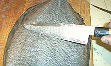
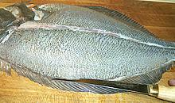
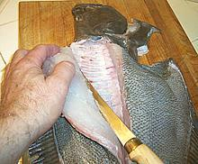
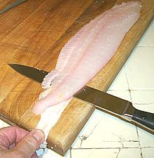
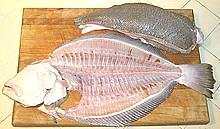

These two large-tooth Flounders are closely related and easily confused. As best I can tell, the photo specimen is a Summer Flounder, which is common from the Florida Panhandle to Maine, but not around the Florida peninsula. To a lesser extent it is found along the east coast of Canada and out to Nova Scotia. The Southern Flounder is found from the southeast coast of Texas to North Carolina, but not along southern Florida. Both inhabit shallow coastal waters, estuaries and sometimes even in fresh water. The Southern Flounder can grow to 32-1/2 inches long and just over 20 pounds while the Summer Flounder can grow to 37 inches and 26 pounds, but the photo specimen was 15-3/4 inches long and weighed 1 pound 10-1/8 ounces. These fish are pure white on the blind side. Red List status for both fish is LC (Least Concern).
As with some other large-tooth Flounders, these are officially "left eyed flounders", but nearly half are right eyed, including the photo specimen. These fish start life swimming normally with an eye on each side, then one eye migrates to the other side and they settle down to life on the bottom - sort of. They get impatient waiting for something to eat, so they often go actively hunting well off the bottom. They eat mostly small fish, shrimp and small crabs.
More on Flounder Families.
The Summer Flounder is the most important East Coast flounder for both commercial and sports fishing. Fluke flesh is white, very mild, delicate in flavor and texture. It is considered an excellent eating fish, especially for people who don't like their fish to taste much like fish. I'm sure it is a darling of the fancy chef set, because it's flavor will not interfere with their delicate sauces. On the plate, it more crumbles than flakes apart, and has a somewhat dry mouth feel.
Cooking: This fish does very well dusted with rice four and pan fried. It can be poached if the pieces are not too large and the time very short (4 minutes max), though it will be a bit bland. You definitely don't want to try to use it for soup or stews - it will just fall apart into tiny fragments.
Buying: The photo specimen was purchased from a Philippine market in Los Angeles, for 2014 US $3.99 / pound. this fish will be much more common in fish markets on the East Coast.
Method: The photo examples below feature a California Halibut, but there is very little difference (except the California fish can get a lot bigger).
 Scales: This fish has medium size scales on both sides. Adhesion is fairly good, so they need a little effort to scrape off, and some scales may need to be shaved off, as shown in the photo.
Cleaning: This fish is easy to clean - there isn't
a whole lot in it. It is so large you probably won't be cooking it
head-on, so just remove the head and you can scoop everything out
easily. Pull the gills out of the head if you will be making stock.

Filleting: This fish is very easy to fillet. First
make the usual cuts to remove the head. Next make a cut down the center
to the backbone. Except right up near the head, just follow the lateral
line. Next, outline the fillet by cutting in from fin edges through the
skin at a very shallow angle.

Fillet from the backbone outward for the bottom fillet. Try to stay on
the right side of the fin rays, but If you should get under them, just
deepen your fin edge cuts until they meet the main cut. You can do the
same for the top fillet, but I find it easier to cut from the fin inward
like for round fish, Do the same for the blind side. Unlike some flat
fish, this fish is quite meaty on the blind side due, to the amount of
time it spends hunting off the bottom. You should be easily able to
produce a "see through" skeleton.
 Skin: The skin has very moderate shrinkage so fillets can be fried skin-on - in fact you can even poach skin on and the skin will barely distort the meat, then it becomes very soft. If desired, the skin can be removed fairly easily using the long knife and cutting board Method. The raw skin is quite strong, so you can use a fairly steep angle so you take no flesh. You will lose the edge where it covered the fin rays, as you can see in the photo, but that isn't a lot of meat. Just add it to the stock pot along with the skins - or fry it as a snack for the cook, eaten with a few drops of lemon juice.
Yield: A 3 pound 14 ounce (factory cleaned) fish
yielded 2 pound 9 ounces of skin-on fillet (66%). Skin off was2 pound
4-1/2 ounces (58%). A guts-in fish would be more like 53% and 41%,
still pretty good yield.

Stock: The heads, bones and fins of this fish make a
mild, very usable stock. Be sure to pull the gills from the head as they
can make a stock bitter. You can include the skins if you have removed
them from the fillets. For details see our
Fish Stock page.
The stock will have a significant amount of oil, which you should remove
using your gravy separator.